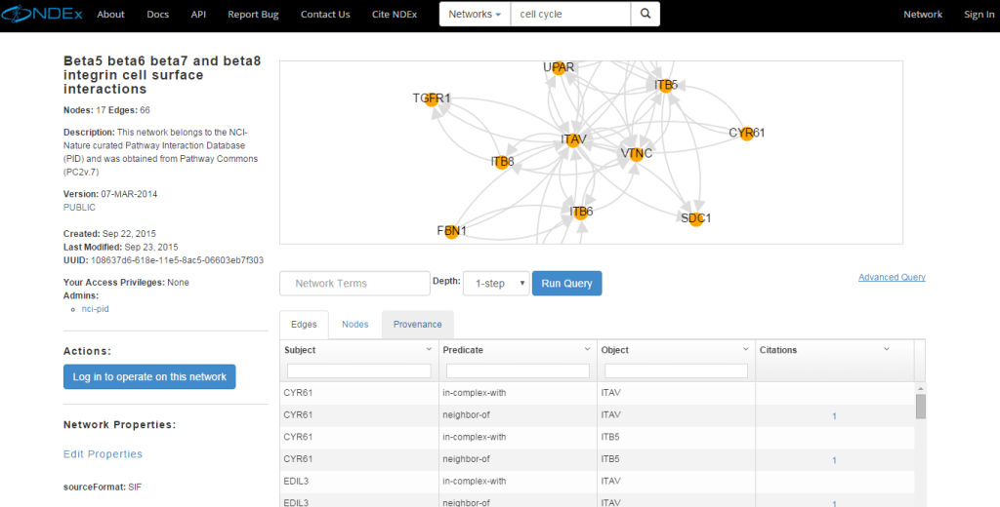
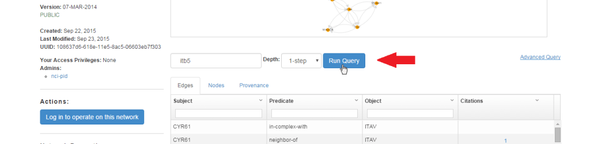
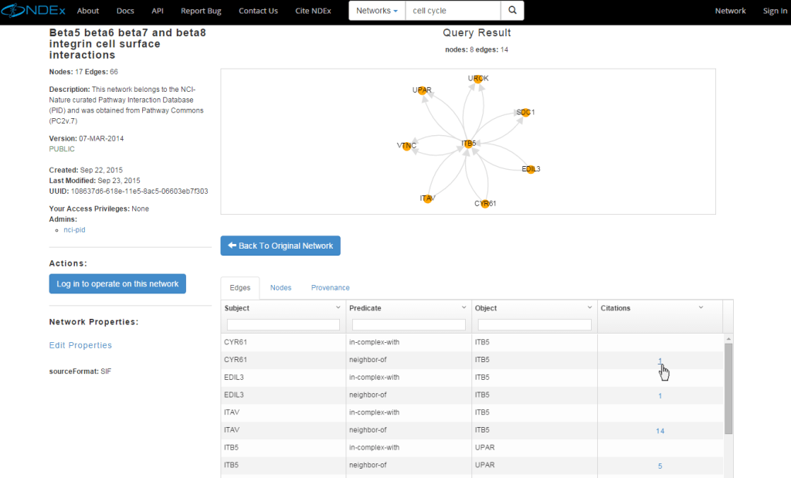

Quick Start Guide
The NDEx Public Server includes a large number of networks that are marked as "PUBLIC" and are therefore accessible without signing in to a user account. Public networks can be found, viewed, and queried anonymously using the search bar on the NDEx Public Server's landing page.
IMPORTANT NOTE: The screenshots in all our user manuals are for training purposes and might be different from the actual screen output you will obtain when working on the current NDEx version deployed to our public server.
Searching for Networks, Users and Groups
- The NDEx Search function has been improved to search for networks, users and groups at the same time. For example, type cell cycle into the search box and click the magnifying glass or press enter:
- The search results page is displayed below and lists several public networks. Users and groups are shown in separate tabs. Hover on a network's name to display a pop up window with its description (when available).
- You can also explore the entire server content using the new "Browse" button.
- Finally, the "Search Examples" button has several examples of many different type of searches you can perform in NDEx and, most importantly, provides a direct link to our Advanced Search documentation.

- Now, click on any public network to view it: let's choose the "Beta5 beta6 beta7 and beta8 integrin cell surface interactions"… In the network display page, information about the network is available on the left and includes the counts of nodes and edges for the entire network, version, date of creation and UUID. Information also includes the username of the network's administrators.

Running a Query
- To run a query on this network, use the text box in the query controls indicated by the red arrow.
- You can enter terms to query the network and specify a depth: 1-Step finds only the immediate neighbors of the nodes.
- For example, type itb5 (integrin beta5), select a depth of 1-step and click the "Run Query" button: the query will find a neighborhood around all nodes that reference the itb5 term.

- As shown in the image below, the query has retrieved a subnetwork, a small neighborhood consisting of "8 nodes" and "14 edges". Additional useful information (such as citations) about nodes and edges can be obtained by analyzing the table below the graphic representation.
